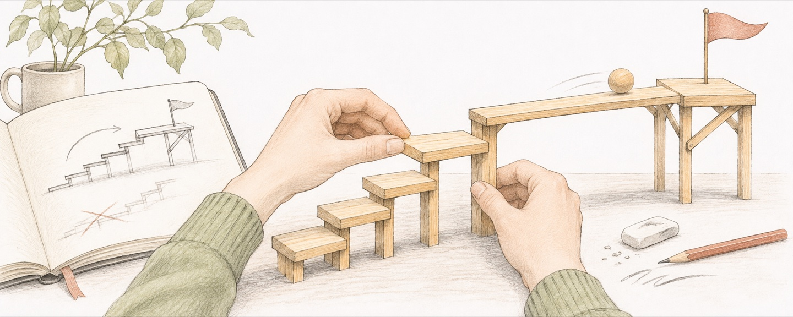

从理解走向行动

我用 AI 的时候，也会反过来想人是怎样做事的。给智能体一个问题，期待它找到办法、调用工具、看结果，再继续调整。回到自己身上，同样需要问，我现在做的事与目标有什么关系？得到了新信息之后，下一步有没有变化？
我把智能理解为达成目标的能力。知道很多、想得很复杂，都还需要落实到怎样行动。做出的东西是否解决了原来的问题，是我更关心的。
目标也需要被检查
开始之前，我想先把希望发生的变化说清楚。一个问题值得研究，是因为还有什么重要的事不理解？一个工具值得制作，是因为现有办法在哪一步不方便？把目的说具体，才容易选择方法，也容易发现自己已经偏离。
但我不想把最初的目标看成不能改的东西。行动之后，可能发现原来的理解太粗，真正的困难在别处。承认这一点，往往意味着需要重新选问题，而非继续把原来的计划做得更完整。
控制系统给了我一个观察角度。系统需要目标，也需要知道自己的行为产生了什么结果。拿这个类比看工作，记录、检查和反馈都有具体用途：让下一次行动能够考虑已经发生的事情。这个类比帮助我整理思路，并不替我回答一个目标是否值得追求。
我想在投入做事和退后观察之间切换。执行时，把问题向前推；回看时，看看哪些假设已经变了，哪些工作只是在延续惯性。有时应该继续，有时应该换方法，也有时应该停下来。
这样的主动性需要自己承担选择。我可以让 AI 提出路线、执行任务、指出遗漏，但是否接受结果、是否继续投入，仍然要根据目标和实际情况决定。